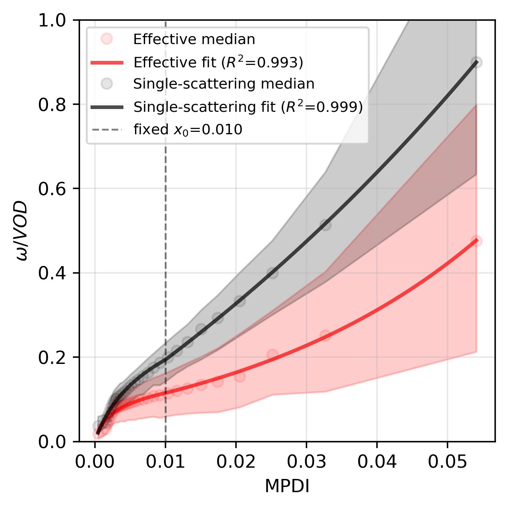
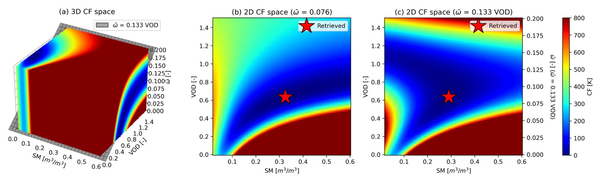
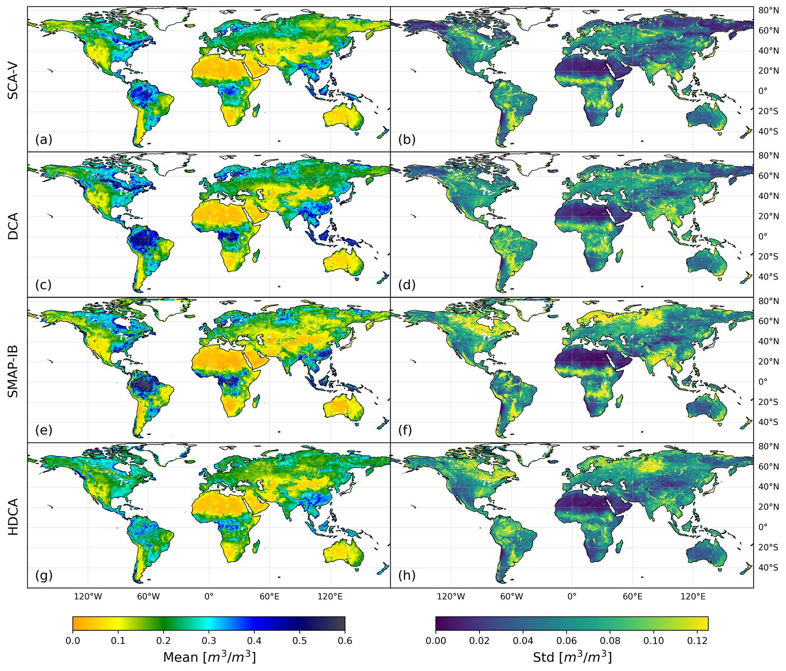
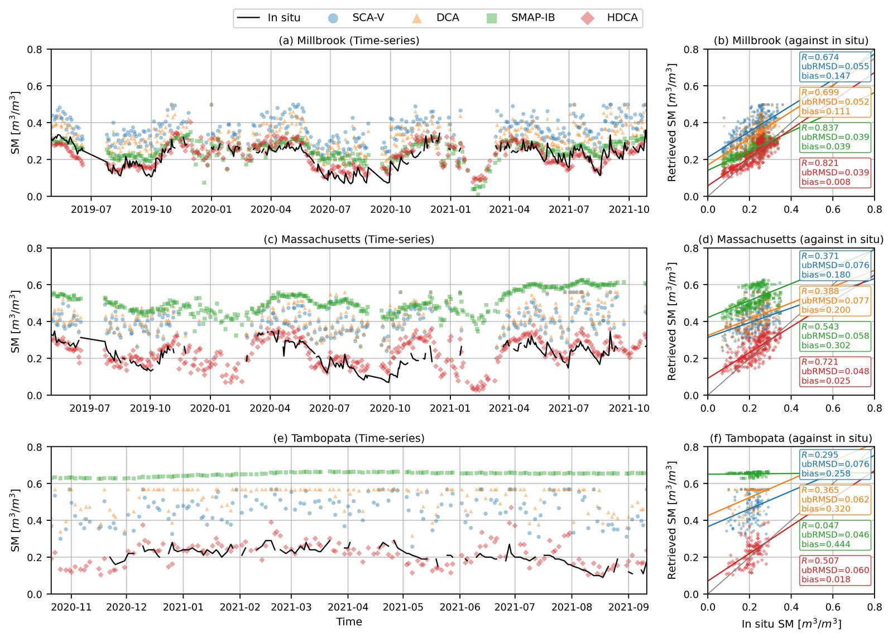
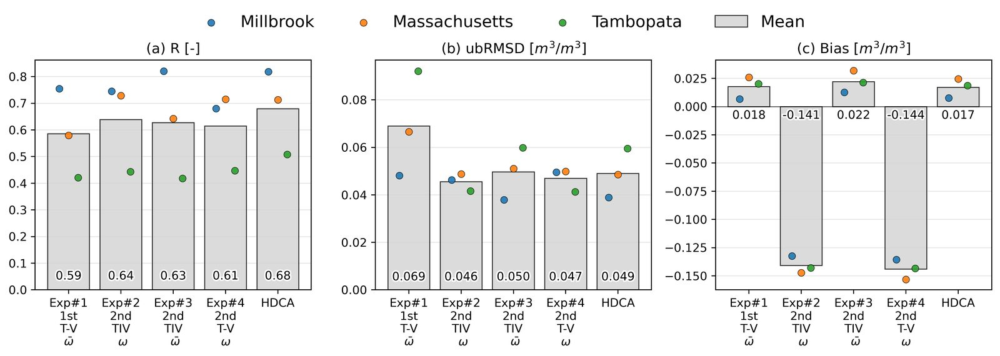
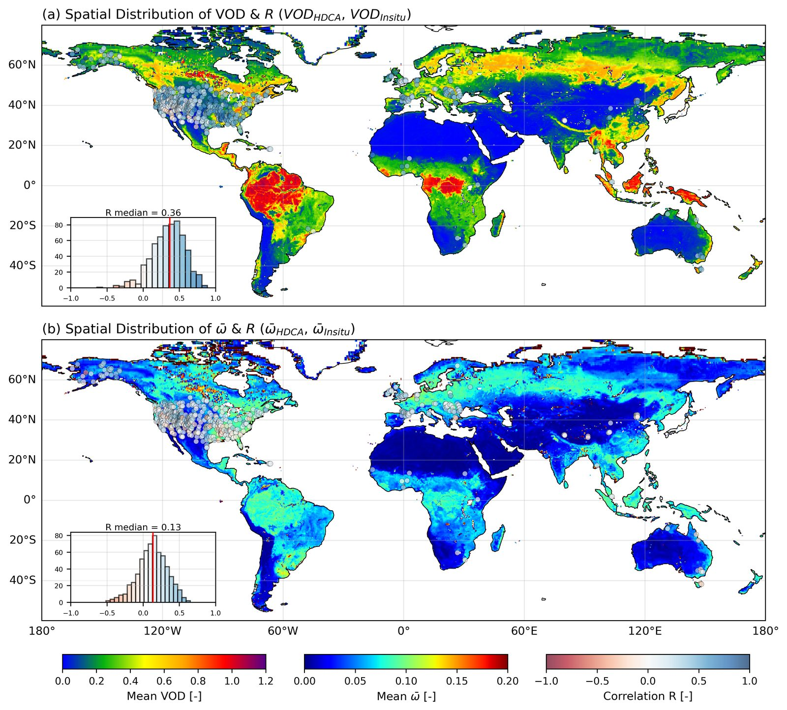

No retrieval — not observed, frozen, or water
Click any land cell: the panel on the right shows its daily series for the selected year and the whole 2015–2025 record, for all three retrieved variables. Each cell is 36 km; the map draws the cells as they are, without smoothing.
From the paper
How the retrieval works, and how well — in plain words
A satellite radiometer sees the soil through the canopy. The canopy both absorbs the soil's microwave emission (described by the vegetation optical depth, VOD) and scatters it (described by the scattering albedo, ω). SMAP measures only two numbers per cell and day — the brightness temperature at vertical and at horizontal polarisation — so three unknowns cannot be solved for directly. Most retrievals therefore fix ω. The six figures below show how HDCA avoids that, and what it changes.

1 · One measurable number ties the two vegetation unknowns together
Working through the radiative transfer for the two polarisations, the paper shows that the ratio of the effective scattering albedo to VOD is governed by the microwave polarisation difference index (MPDI), a quantity computed from the two brightness temperatures SMAP already measures. Fitted on a large set of simulated canopies, a single hybrid log–exponential curve describes that ratio with R² above 0.99 (red: effective albedo ω, which folds first-order scattering into the usual τ–ω form; black: the single-scattering albedo). This curve is the extra equation the inversion was missing.

2 · Why that makes the problem solvable
With three free parameters the misfit between simulated and measured brightness temperatures forms a volume with no single best point (a). Fixing ω at a constant gives the familiar two-parameter surface (b), which is what operational retrievals do. HDCA instead lets ω move with VOD along the MPDI curve (the grey sheet in a), which folds the search onto a surface with a clear minimum (c) and is cheaper to compute than a full 3-D search.
The retrieval then runs twice. A first pass over the whole record produces, for each cell, 10-day running means and monthly climatologies of soil moisture, VOD and ω. The second pass, which is the product on this site, retrieves each day with those values as soft priors, so a single noisy overpass cannot pull the three parameters far from where the surrounding days put them.

3 · What the maps look like next to SMAP's own products
Mean and standard deviation of soil moisture over 2015–2023 from the two operational SMAP algorithms (SCA-V, DCA), the SMAP-IB product and HDCA. All four share the large-scale pattern, wetter where vegetation is dense. The difference sits in the forests: HDCA is drier over forested regions and varies more from day to day. Part of what the fixed-albedo retrievals read as persistently wet soil is canopy scattering that HDCA assigns to ω instead.

4 · Against measurements under forest
Three forest sites with in situ soil moisture. At Millbrook (New York) every product follows the seasonal course; HDCA reaches R = 0.82 with a bias of 0.008 m³/m³, where the others are wetter than the ground, most visibly in the growing season. At Massachusetts, under denser forest, the existing products fall to R of 0.37–0.54 with wet biases of 0.18–0.30 m³/m³; HDCA holds R = 0.72, ubRMSD 0.048 and bias 0.025 m³/m³. At Tambopata in the Amazon, where retrieval is hardest, HDCA reaches R = 0.51, ubRMSD 0.060 and bias 0.018 m³/m³. Across the International Soil Moisture Network, HDCA also shows slightly higher R and smaller random error than the other products in most land-cover classes.

5 · Which ingredient does what
Switching the pieces of HDCA off one at a time at the three forest sites shows that they do different jobs: the second, multi-temporal pass improves correlation and random error; accounting for first-order scattering mainly removes the wet bias; and letting the albedo vary in time is what keeps soil moisture sensitive under dense vegetation. The complete configuration, the one behind this dataset, is the best of the five on all three measures.

6 · The vegetation parameters themselves, and how far to trust them
The mean VOD and ω maps follow vegetation density, as earlier SMAP studies found. Because there is no ground truth for either, the paper checks them against retrievals in which the measured in situ soil moisture is fed in: VOD agrees reasonably in its day-to-day variation (median R = 0.36, better over vegetated land), ω much less (median R = 0.13), with little bias in either. In short, ω is the parameter that makes the soil moisture better; it is not yet a validated vegetation product on its own, which is why this site shows it but asks you to screen it.
Figures and numbers from Lee, J., Yueh, S., Entekhabi, D., Colliander, A., Im, J., Park, C.-H., and Kim, H., Remote Sensing of Environment, accepted (preprint doi:10.2139/ssrn.7287481). The evaluation period of the paper is 2015–2023; this site extends the product to the end of 2025 with the same algorithm.
Download
One NetCDF file per day, plus one merged file for the whole record. A daily file is about 8 MB; the merged file holds every variable for 2015–2025 on one time axis.
The merged file
| File | Size | Dimensions | Variables |
|---|
Daily files
| Year | Days with data | Missing days | Size | Folder |
|---|
What is in a file
| Format | NetCDF-4 (HDF5), zlib level 4, float32 |
|---|---|
| Grid | EASE-Grid 2.0 global cylindrical equal-area, 36 km (EPSG:6933), 406 rows × 964 columns. latitude(y, x) and longitude(y, x) hold the cell centres; y and x are plain indices. |
| Time | Daily, one 6 a.m. (descending) overpass set per day. The merged file has a complete daily axis from 2015-04-01; days without a SMAP file are all fill values. |
SM | Soil moisture, m³/m³. HDCA second-stage retrieval. The inversion searches 0.02 to the cell's porosity. |
VOD | Vegetation optical depth at nadir, dimensionless, searched over 0–1.5. |
OMEGA | Effective scattering albedo ω, dimensionless. Tied to VOD through the MPDI-based relationship of the paper; values above 1 occur and should be screened. |
TBv, TBh | SMAP L3 brightness temperatures, V and H polarisation, K (the retrieval's input). |
Teff | Effective soil temperature from SMAP L3, K. Cells at or below 273.15 K are not retrieved. |
| Fill value | −9999 for every variable in the merged file; in the daily files TB and Teff use NaN |
| Masking | A cell has no retrieval when there was no 6 a.m. overpass, when the microwave polarisation difference index was ≤ 0.002, or when Teff ≤ 273.15 K. |
Use in code
The files are ordinary NetCDF-4: xarray opens them directly. The grid is not a regular lat/lon grid, so find a cell by its centre coordinates rather than with .sel(lat=…).
Python — the record at one cell
Python — a monthly mean map from the daily files
Python — screening before use
Browse fields
The map on this site does not use pictures of the data. It reads one 8-bit numeric field per day (964 × 406 cells, in which each cell stores the value in whole steps: 0.0035 m³/m³ for soil moisture, 0.006 for VOD, 0.001 for ω) and projects and colours it in the browser. The pixel series come from a separate store with 0.0001 precision. Both are for looking, not for analysis: use the NetCDF files for any calculation.
About the data
The Hybrid Dual-Channel Algorithm (HDCA) retrieves soil moisture, vegetation optical depth and a time-varying effective scattering albedo together from SMAP's L-band brightness temperatures. This is its daily product on SMAP's 36 km global grid, April 2015 to December 2025.
The algorithm
Retrieving soil moisture under dense vegetation is hard because the canopy both attenuates and scatters the microwave emission of the soil. Retrievals built on the τ–ω model usually hold the scattering albedo ω fixed in time, which ignores how vegetation scattering changes through the season and leaves systematic and random errors in the soil moisture.
HDCA retrieves soil moisture, vegetation optical depth (VOD) and an effective scattering albedo ω together from SMAP's dual-polarised L-band brightness temperatures, accounting for first-order scattering in the canopy. An analytical relationship between VOD and ω, derived from the microwave polarisation difference index (MPDI), is used as a constraint, which makes the otherwise ill-posed three-parameter inversion tractable.
Inputs
| Brightness temperatures | SMAP L3 Radiometer Global Daily 36 km EASE-Grid Soil Moisture, SPL3SMP version 9 (NASA NSIDC DAAC), 6 a.m. descending overpass, water-body-corrected TB at V and H polarisation |
|---|---|
| Ancillary | Effective soil temperature, roughness coefficient, bulk density and clay fraction from the same SMAP product; incidence angle 40° |
| Soil dielectric model | Mironov (MBSDM), with the SMAP DCA roughness and polarisation-mixing treatment |
How these fields were made
- Two passes. A first retrieval over the whole record provides monthly climatologies; the second pass, shown here, uses the previous ten days and the climatology as priors for soil moisture, VOD and ω, and searches a 151 × 151 grid of soil moisture and VOD with ω tied to VOD.
- Frozen and low-contrast cells are skipped. Cells are not retrieved when the MPDI is 0.002 or less or when the effective soil temperature is at or below 273.15 K.
- One overpass set per day. Only cells with a 6 a.m. overpass that day have values; SMAP covers the globe in two to three days, so a single day shows the swath pattern. Monthly and climatological layers on this site are means over the days that had a retrieval.
- Nothing is gap-filled or smoothed, here or in the files.
Read this before you use the numbers
- 36 km is the grid. A cell averages many land covers; the retrieval represents the top few centimetres of soil under whatever is in the cell.
- Bounds. Soil moisture is searched from 0.02 m³/m³ up to the cell's porosity and VOD from 0 to 1.5; values sitting on a bound are the limit of the search, not a measurement.
- ω is retrieved as part of the inversion. Values above 1 occur in about 4 % of retrievals and are not physical; the map's colour scale stops at 0.25 and the files keep the full value. Screen ω before using it on its own.
- Validation. The paper evaluates the product against forest sites (Tambopata in the Amazon; Millbrook and Massachusetts in the north-eastern United States) and agricultural SMAP core validation sites (Carman, South Fork). Elsewhere the quality is not verified.
- Gaps. —
Citation
Lee, J., Yueh, S., Entekhabi, D., Colliander, A., Im, J., Park, C.-H., and Kim, H. Soil Moisture Retrieval For Dense Vegetation Considering Time-Varying First-Order Scattering From SMAP L-Band Dual-Polarized Brightness Temperatures. Remote Sensing of Environment, accepted. Preprint: doi:10.2139/ssrn.7287481.
Sources and credits
SMAP L3 Radiometer Global Daily 36 km EASE-Grid Soil Moisture, version 9 (O'Neill et al., NASA NSIDC DAAC, doi:10.5067/4XXOGX0OOW1S). Land outline from Natural Earth (public domain). Background imagery © Esri and its data providers.
Contact: · HydroAI Lab, Gwangju Institute of Science and Technology —